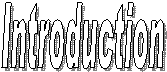

In computer games, when you play as Player1 and you select Player2 or Opponent as "Computer", you fight against "Artificial Intelligence" programs which are nothing but programs written to control the game under given conditions. As you go from difficulty level 'Easy' to 'Hard', the better is the AI program used. The best AI program is the one which is the toughest to win against, by using all the possible means.
In AI Wars, you are the programmer and Player2 is your opponent's program. You are required to write a program that has the ability to win against most other programs. Remember, deciding the strategy is important, C programming is easy.
Every player has 3 units (called bots) which can move in the Arena, bomb enemy bots, attack enemy buildings, carry resources, message his teammates, etc. Like all games, these bots have certain hit points which reduce when bombed. A bot dies when his hit points are exhausted and is reborn after a certain gametime. A bot can win points for his team by capturing a resource, destroying an enemy building or killing an enemy bot. The program that either destroys all enemy bots as well as building at any gametime or has more points at the end of a fixed time wins. For rules in detail refer the Game page.
There are predefined functions for performing tasks such as moving, scanning, bombing, communicating with teammates, etc. The programmer is required to write a code in C/C++ using standard library functions and commands along with given functions such as scan(), fire(), msgsend(), etc. For more regarding programming refer to program info.
You should download the AI Wars distribution.
For Linux, you need to have at least a basic C compiler to play the game. The distribution comes with two kinds of displays. You will also need to download and install additional libraries for Linux. See install.html for details.
For Windows, you need Microsoft Visual C++ or an equivalent compiler. The text display works but not too well. For the OpenGL display, you need to install the necessary libraries, headers and dll's for OpenGL, glut and glu.
For further details on installing the additional libraries, click hereThe aiwars.tar.gz (for linux users) or aiwars.zip (for windows) file contains the source codes of programs for game simulation, game display and other files. There is one header file and a C file that contains the basic functions that the driving program uses to give instructions to the bots. There are also some sample maps and driving programs.